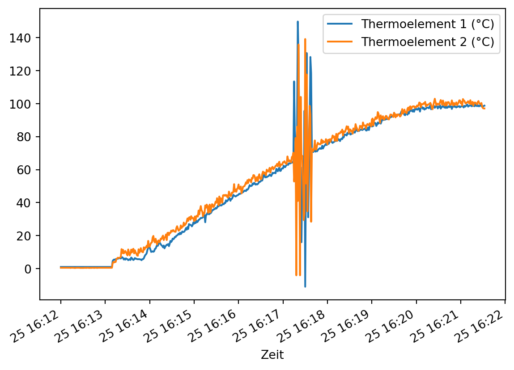
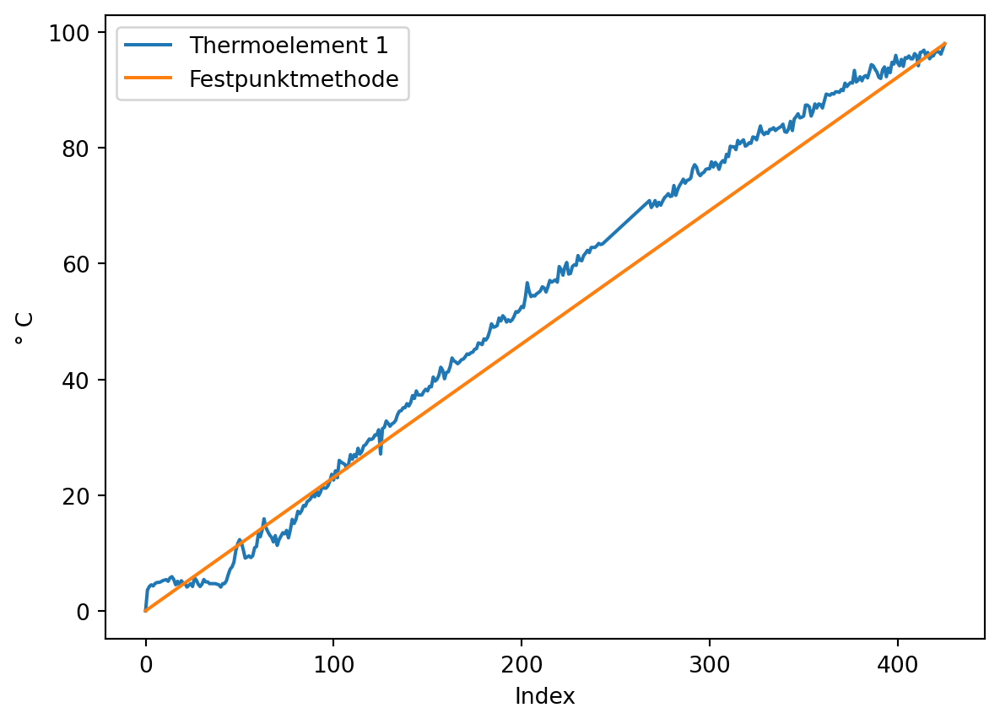
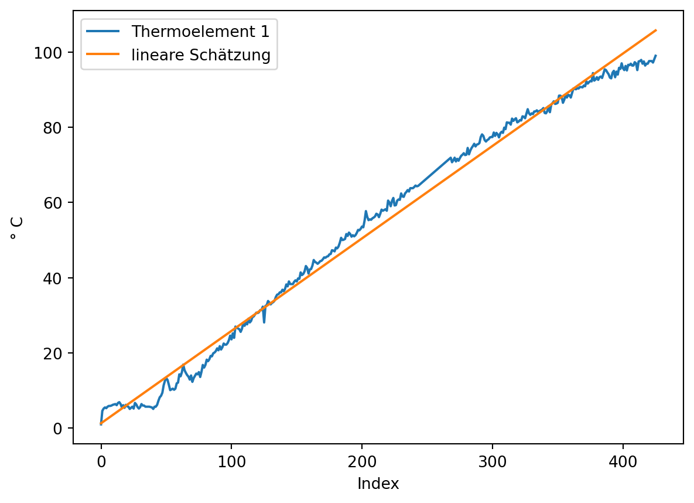
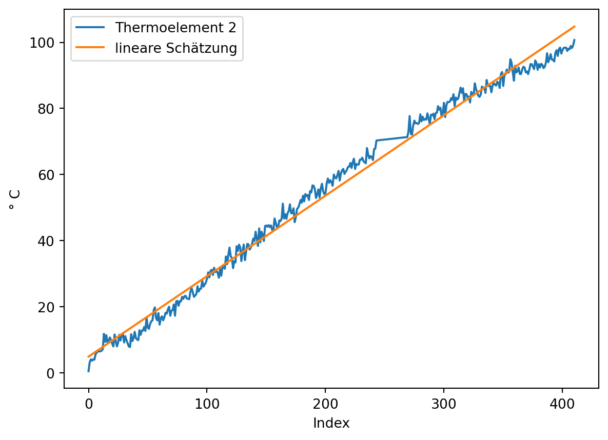

Die Parameterschätzung nach der Toleranzbandmethode führt zur besten linearen Approximation von Messwerten (da die als Fehler zu interpretierenden Residuen minimiert werden). Nicht-lineares Messverhalten oder Daten mit größeren Messungenauigkeiten behaftete Daten führen aber fast zwangsläufig einen Nullpunktfehler in die geschätzte Gerade ein. Die Festpunktmethode umgeht dieses Problem, führt aber zu einem größeren Linearitätsfehler.
In diesem Kapitel werden die praktischen Herausforderungen beider Methoden demonstriert und mit der Zweipunktkalibrierung ein praktisches Verfahren für die Kalibrierung von Messdaten vorgestellt.
Ziel: Nullpunkt- und Empfindlichkeitsfehler korrigieren nicht-linearität quantifizieren
7.1 Versuchsaufbau
Versuchsaufbau Eis kochen
In einem thermodynamischen Feldlabor wurde ein induktives Heizelement benutzt, um Eiswasser in einem metallischen Flüssigkeitsbehälter mit hoher Wärmeleitfähigkeit zum Kochen zu bringen. Mit einer nichtleitenden Halterung wurden zwei Thermoelemente eines Widerstandsthermometers fixiert. Ein TCTempX16 und eine automatische Protokolleinheit zeichneten die Daten auf.
7.2 Datei einlesen
Die Messreihe ist in der Datei ‘01-daten/Eis_Messung_1.xlsx’ im Tabellenblatt ‘T15949 MultiChannel - Daten’ gespeichert.
eis = pd.read_excel(io ='01-daten/Eis_Messung_1.xlsx', sheet_name ='T15949 MultiChannel - Daten')print(eis.head(n =10))
Gerätename: Unnamed: 1 \
0 Gerätebeschreibung: NaN
1 Serien-Nummer: NaN
2 Geräte-ID: NaN
3 NaN NaN
4 NaN NaN
5 Datum Zeit
6 2025-09-25 16:12:00 2025-09-25 16:12:00
7 2025-09-25 16:12:01 2025-09-25 16:12:01
8 2025-09-25 16:12:02 2025-09-25 16:12:02
9 2025-09-25 16:12:03 2025-09-25 16:12:03
TCTempX16 \
0 16-Kanal Thermoelement Temperatur-Datenlogger
1 T15949
2 MultiChannel
3 NaN
4 Kanal 2
5 Thermoelement 1 (°C)
6 1
7 1
8 1
9 1
TCTempX16.1
0 16-Kanal Thermoelement Temperatur-Datenlogger
1 T15949
2 MultiChannel
3 NaN
4 Kanal 4
5 Thermoelement 2 (°C)
6 0.5
7 0.5
8 0.5
9 0.5
Das Einlesen und Bereinigen der Daten finden Sie in dem folgenden Beispiel.
Beispiel 7.1: Datensatz einlesen & bereinigen
Im Kopf des Tabellenblatts stehen Metadaten der Messung. Es gibt vier Spalten mit Daten: Datum und Zeit sowie die Messreihen der beiden Thermoelemente.
Die Daten wurden korrekt eingelesen. Mit der Methode pd.describe() wird der Wertebereich der Spalten überprüft, um numerisch kodierte fehlende oder fehlerhafte Werte zu identifizieren.
print(eis.describe())
Datum Zeit \
count 565 565
mean 2025-09-25 16:16:47.024778 2025-09-25 16:16:47.024778
min 2025-09-25 16:12:00 2025-09-25 16:12:00
25% 2025-09-25 16:14:25 2025-09-25 16:14:25
50% 2025-09-25 16:16:47 2025-09-25 16:16:47
75% 2025-09-25 16:19:09 2025-09-25 16:19:09
max 2025-09-25 16:21:32 2025-09-25 16:21:32
std NaN NaN
Thermoelement 1 (°C) Thermoelement 2 (°C)
count 565.000000 565.000000
mean 53.581239 55.451858
min -11.000000 -4.100000
25% 14.900000 20.300000
50% 56.200000 58.300000
75% 90.300000 91.200000
max 149.800000 139.200000
std 36.886184 36.542679
Die Spalten Datum und Zeit enthalten die selben Informationen. Eine der beiden Spalten kann deshalb entfernt werden. Die Temperaturmessungen sollten näher betrachtet werden. Eishaltiges Wasser, das zum Kochen gebracht wird, sollte sich in einem Temperaturbereich von 0 bis 100 °C bewegen.
eis.drop(labels ='Datum', axis =1, inplace =True)
Wir stellen den Datensatz grafisch dar.
eis.plot(x ='Zeit', y = ['Thermoelement 1 (°C)', 'Thermoelement 2 (°C)'])

Etwa in der Mitte des Datensatzes verzeichnen beide Sensoren extreme Fehlwerte. Diese sollen entfernt werden.
Fehlwerte entfernen Zunächst betrachten wir den Bereich genauer.
In einem bestimmten Abschnitt scheinen keine gültigen Werte vorzuliegen und diese sollen als ungültig markiert werden. Dazu betrachten wir zunächst die typische Veränderung der Messwerte, also die Differenz jedes Werts zu seinem Vorgänger mit der Methode pd.Series.diff(). Ebenfalls wird die Veränderung in studentisierten z-Werten ausgedrückt.
Die z-Werte werden mit der scipy-Funktion scipy.stats.zscore(a, ddof = 1, nan_policy = 'omit')) ermittelt. a steht für array-artige Daten, ddof = 1 spezifiziert die Stichprobenstandardabweichung und das Argument nan_policy = 'omit' wird verwendet, um mit dem Wert np.nan an der ersten Stelle arbeiten zu können, der aus der Berechnung der Veränderung entsteht, da für den ersten Wert einer Reihe kein gültiger Wert berechnet werden kann.
Hinweis 7.1: np.diff() und pd.diff()
NumPy und Pandas verfügen über eine Funktion diff. Diese verhalten sich standardmäßig unterschiedlich. Um die Länge einer Datenreihe mit np.diff() zu erhalten, können die Parameter prepend oder append verwendet werden, um der Datenreihe vor Ausführung der Operation einen Wert voranzustellen oder einen Wert anzuhängen. So bleiben die Länge der Datenreihe und die Indexpositionen der Werte erhalten.
Die Position der ungültigen Werte kann sowohl über eine sinnvolle Schwelle der (absoluten) Temperaturveränderung oder der absoluten z-Werte bestimmt werden. In diesem Fall verwenden wir die absolute Temperaturveränderung und wählen den Schwellwert 10. Es wird die Position des ersten und des letzten Werts, der oberhalb dieses Schwellwerts liegt, bestimmt.
# absolute Änderung bestimmendiff_thermoelement1 = eis['Thermoelement 1 (°C)'].diff().abs()diff_thermoelement2 = eis['Thermoelement 2 (°C)'].diff().abs()# Schwellwert festlegen und prüfenschwellwert =10bool_series_thermoelement1 = diff_thermoelement1 > schwellwertbool_series_thermoelement2 = diff_thermoelement2 > schwellwert# ersten und letzten Wert größer Schwellwert finden## Thermoelement 1### Wo steht nicht False?### np.nonzero() gibt ein Tupel zurück### Dieses enthält für jede Dimension ein array der Indexwertepositionen_thermoelement1 = np.nonzero(bool_series_thermoelement1)## Thermoelement 2### Wo steht nicht False?### np.nonzero() gibt ein Tupel zurück### Dieses enthält für jede Dimension ein array der Indexwertepositionen_thermoelement2 = np.nonzero(bool_series_thermoelement2)# Ausgabe## Thermoelement 1print("Thermoelement 1")print(51*"=")print("Anzahl der Temperaturänderungen mit Betrag > 10:", bool_series_thermoelement1.sum())print(f"Die Position des ersten Werts: {positionen_thermoelement1[0][0]}")print(f"Die Position des letzten Werts: {positionen_thermoelement1[0][-1]}")## Thermoelement 2print("\nThermoelement 2")print(51*"=")print("Anzahl der Temperaturänderungen mit Betrag > 10:", bool_series_thermoelement2.sum())print(f"Die Position des ersten Werts: {positionen_thermoelement2[0][0]}")print(f"Die Position des letzten Werts: {positionen_thermoelement2[0][-1]}")
Thermoelement 1
===================================================
Anzahl der Temperaturänderungen mit Betrag > 10: 20
Die Position des ersten Werts: 310
Die Position des letzten Werts: 333
Thermoelement 2
===================================================
Anzahl der Temperaturänderungen mit Betrag > 10: 20
Die Position des ersten Werts: 310
Die Position des letzten Werts: 333
Für beide Thermoelemente kann der gleiche Bereich als ungültig markiert werden. Vor der weiteren Bearbeitung wird eine Kopie des aufgeräumten Datensatzes erstellt.
von = positionen_thermoelement1[0][0]bis = positionen_thermoelement1[0][-1]eis.loc[von : bis, ['Thermoelement 1 (°C)', 'Thermoelement 2 (°C)']] = np.nan# Kopie von eis anlegeneis_backup = eis.copy()
7.3 Daten darstellen
Der Datensatz wird dargestellt. (In der Darstellung mit pd.plot() ist die automatisch gewählte x-Achsenbeschriftung unansehnlich. Deshalb wird ein Datenobjekt für die Darstellung angelegt und die Spalte ‘Zeit’ auf die Uhrzeit reduziert.)
Für die Korrektur des Nullpunkt- und des Empfindlichkeitsfehlers sind als Referenzpunkte die Temperaturen 0 und 100 Grad Celsius bekannt: Solange Eis im Wasser schwimmt, hat es 0 °C, und bei 100 °C erreicht das Wasser seinen Siedepunkt.
0 °C
Für die wahre Temperatur 0 °C sind viele Messpunkte verfügbar. Schauen wir uns die ersten 100 Messwerte an:
eis.loc[0 : 100, ['Thermoelement 1 (°C)', 'Thermoelement 2 (°C)']].plot(xlabel ='Index', ylabel ='gemessene Temperatur in °C')
Der Zeitpunkt, ab dem die Wärmezufuhr beginnt, kann z. B. mit der Methode pd.diff() ermittelt werden:
Da das Thermoelement 1 leichte Messabweichungen aufweist, wird ein Schwellwert etwas größer als 0 gewählt. Damit wird die Position des ersten Werts bestimmt, der oberhalb des Schwellwerts liegt.
# absolute Änderung bestimmendiff_thermoelement1 = eis.loc[0 : 100, 'Thermoelement 1 (°C)'].diff().abs()diff_thermoelement2 = eis.loc[0 : 100, 'Thermoelement 2 (°C)'].diff().abs()# Schwellwert festlegen und prüfenschwellwert =0.2bool_series_thermoelement1 = diff_thermoelement1 > schwellwertbool_series_thermoelement2 = diff_thermoelement2 > schwellwert# ersten Wert größer Schwellwert finden## Thermoelement 1### Wo steht nicht False?### np.nonzero() gibt ein Tupel zurück### Dieses enthält für jede Dimension ein array der Indexwertepositionen_thermoelement1 = np.nonzero(bool_series_thermoelement1)## Thermoelement 2### Wo steht nicht False?### np.nonzero() gibt ein Tupel zurück### Dieses enthält für jede Dimension ein array der Indexwertepositionen_thermoelement2 = np.nonzero(bool_series_thermoelement2)# Ausgabe## Thermoelement 1print("Thermoelement 1")print(f"Die Position des ersten Werts: {positionen_thermoelement1[0][0]}")## Thermoelement 2print("\nThermoelement 2")print(f"Die Position des ersten Werts: {positionen_thermoelement2[0][0]}")
Thermoelement 1
Die Position des ersten Werts: 67
Thermoelement 2
Die Position des ersten Werts: 67
Die Wärmezufuhr beginnt also bei dem Wert an Indexposition 67. Der Nullpunkt der Messreihe liegt somit an der Indexposition 67 - 1.
start_wärmezufuhr =67start = start_wärmezufuhr -1
7.5 Nullpunktfehler korrigieren
Somit kann der Nullpunktfehler nun für beide Thermoelemente aus der Differenz zwischen dem Mittelwert der gemessenen Werte bis exklusiv Indexposition 67 und dem wahren Wert 0 direkt berechnet werden. Diese Position haben wir in der Variable start gespeichert, die für beide Thermoelemente gilt.
Auch für die wahre Temperatur 100 Grad sind viele Messpunkte verfügbar. Wir wollen die letzten 120 Messwerte betrachten. Der Punkt, an dem das Wasser siedet, ist jedoch nicht so einfach zu bestimmen. Starke Messabweichungen erzeugen ein verrauschtes Bild. Um die grafische Analyse zu erleichtern wurden für beide Messreihen der gleitende Durchschnitt sowie der Mittelwert der geglätten Messreihen eingezeichnet. Diese Methoden werden Methoden im Methodenbaustein Datenfitting und Datenoptimierung vermittelt.
Behelfsweise bestimmen wir den Referenzpunkt für 100 °C, indem die Werte zwischen dem Indexwert 500 und bis zu den letzten 10 Werten des Datensatzes gemittelt werden. Anschließend wird der Index bestimmt, an dem die Messwerte diesen Mittelwert erstmalig erreichen. (Hinweis: Die Daten wurden bereits um den ermittelten Nullpunktfehler korrigiert.)
thermoelement1_max = eis['Thermoelement 1 (°C)'].iloc[500 : -10].mean()thermoelement2_max = eis['Thermoelement 2 (°C)'].iloc[500 : -10].mean()# ge = greater or equal, idxmax = find first occurrence of maximum value (0 and 1)ende_thermoelement1 = eis['Thermoelement 1 (°C)'].ge(thermoelement1_max).idxmax()ende_thermoelement2 = eis['Thermoelement 2 (°C)'].ge(thermoelement2_max).idxmax()print(f"Gemitteltes Maximum Thermoelement 1: {thermoelement1_max:.2f} °C",f"Erstmalig erreicht an Position: {ende_thermoelement1 }", sep ="\n")print(f"Gemitteltes Maximum Thermoelement 2: {thermoelement2_max:.2f} °C",f"Erstmalig erreicht an Position: {ende_thermoelement2 }", sep ="\n")
Gemitteltes Maximum Thermoelement 1: 97.32 °C
Erstmalig erreicht an Position: 491
Gemitteltes Maximum Thermoelement 2: 99.93 °C
Erstmalig erreicht an Position: 476
7.6 Empfindlichkeitsfehler ermitteln
Mit den bekannten Start- und Endwerten kann der Empfindlichkeitsfehler geschätzt werden. Da die Funktion numpy.polynomial.polynomial.polyfit() nicht mit fehlenden Werten wie np.nan umgehen kann, müssen diese herausgefiltert werden. Dies geht zum Beispiel so:
Das braucht man bei der Festpunktmethode doch gar nicht
ende = ende_thermoelement1# ideale Kennlinie schätzen# x muss bei Null beginnenlm_kennlinie = poly.polyfit( x = [start - start, ende - start], y = [0, 100], deg =1)print(lm_kennlinie.round(2))## lineare Regression der Messwerte plus y-Achsenschnittpunkt der idealen Kennlinie### gültige Werte bestimmengültige_werte = np.isfinite(eis.loc[start:ende, 'Thermoelement 1 (°C)'])### Regressionlm_messwerte_thermoelement1 = poly.polyfit( x = [start - start, ende - start], y = [eis.loc[start, 'Thermoelement 1 (°C)'], eis.loc[ende, 'Thermoelement 1 (°C)']], deg =1)## Empfindlichkeitsfehler bestimmenspannfehler_thermoelement1 = lm_messwerte_thermoelement1[1] / lm_kennlinie[1]## Ausgabeprint("\nThermoelement 1")print(51*"=")print(f"lineare Schätzung der idealen Kennlinie:\n{lm_kennlinie}")print(f"lineare Schätzung für Thermoelement 1:\n{lm_messwerte_thermoelement1}")print(f"Der Anstieg der Messwerte: {round(lm_messwerte_thermoelement1[1], 2)}")print(f"Der Anstieg der idealen Kennlinie: {round(lm_kennlinie[1], 2)}")print(f"Der Empfindlichkeitsfehler beträgt: {((spannfehler_thermoelement1 -1) *100).round(2)} %")## mal grafisch anguckenplt.plot(np.arange(eis.loc[start:ende, :].shape[0])[gültige_werte], eis.loc[start:ende, 'Thermoelement 1 (°C)'][gültige_werte], label ='Thermoelement 1')linie = poly.polyval(x = np.arange(eis.loc[start:ende, :].shape[0])[gültige_werte], c = lm_messwerte_thermoelement1)plt.plot(np.arange(eis.loc[start:ende, :].shape[0])[gültige_werte], linie, label ='Festpunktmethode')plt.xlabel(xlabel ='Index')plt.ylabel(ylabel ='° C')plt.legend()plt.show()
[-0. 0.24]
Thermoelement 1
===================================================
lineare Schätzung der idealen Kennlinie:
[-8.93311885e-15 2.35294118e-01]
lineare Schätzung für Thermoelement 1:
[-2.45118368e-15 2.30588235e-01]
Der Anstieg der Messwerte: 0.23
Der Anstieg der idealen Kennlinie: 0.24
Der Empfindlichkeitsfehler beträgt: -2.0 %

Thermoelement 2
ende = ende_thermoelement2# ideale Kennlinie schätzen# x muss bei Null beginnenlm_kennlinie = poly.polyfit( x = [start - start, ende - start], y = [0, 100], deg =1)print(lm_kennlinie.round(2))## lineare Regression der Messwerte plus y-Achsenschnittpunkt der idealen Kennlinie### gültige Werte bestimmengültige_werte = np.isfinite(eis.loc[start:ende, 'Thermoelement 2 (°C)'])### Regressionlm_messwerte_thermoelement2 = poly.polyfit( x = [start - start, ende - start], y = [eis.loc[start, 'Thermoelement 1 (°C)'], eis.loc[ende, 'Thermoelement 2 (°C)']], deg =1)## Empfindlichkeitsfehler bestimmenspannfehler_thermoelement2 = lm_messwerte_thermoelement2[1] / lm_kennlinie[1]## Ausgabeprint("\nThermoelement 2")print(51*"=")print(f"lineare Schätzung der idealen Kennlinie:\n{lm_kennlinie}")print(f"lineare Schätzung für Thermoelement 2:\n{lm_messwerte_thermoelement2}")print(f"Anzahl gültiger Werte: {len(np.arange(eis.loc[start:ende, :].shape[0])[gültige_werte])}")print(f"Der Anstieg der Messwerte: {round(lm_messwerte_thermoelement2[1], 2)}")print(f"Der Anstieg der idealen Kennlinie: {round(lm_kennlinie[1], 2)}")print(f"Der Empfindlichkeitsfehler beträgt: {((spannfehler_thermoelement2 -1) *100).round(2)} %")## mal grafisch anguckenplt.plot(np.arange(eis.loc[start:ende, :].shape[0])[gültige_werte], eis.loc[start:ende, 'Thermoelement 2 (°C)'][gültige_werte], label ='Thermoelement 2')linie = poly.polyval(x = np.arange(eis.loc[start:ende, :].shape[0])[gültige_werte] + lm_kennlinie[0], c = lm_messwerte_thermoelement2)plt.plot(np.arange(eis.loc[start:ende, :].shape[0])[gültige_werte], linie, label ='lineare Schätzung')plt.xlabel(xlabel ='Index')plt.ylabel(ylabel ='° C')plt.legend()plt.show()
[-0. 0.24]
Thermoelement 2
===================================================
lineare Schätzung der idealen Kennlinie:
[-8.93311885e-15 2.43902439e-01]
lineare Schätzung für Thermoelement 2:
[1.37512113e-16 2.44444849e-01]
Anzahl gültiger Werte: 387
Der Anstieg der Messwerte: 0.24
Der Anstieg der idealen Kennlinie: 0.24
Der Empfindlichkeitsfehler beträgt: 0.22 %
Somit kann der Empfindlichkeitsfehler korrigiert werden nach korrigierte_messwerte = messwerte / spannfehler.
hier sieht man leider das Problem der linearen Regression nach Toleranzbandmethode: Es wird ein Offset-Fehler erzeugt und der Anstieg falsch geschätzt
Das Vorgehen sollte besser werden, wenn die Festpunktmethode verwendet wird. (Dafür wird der Linearitätsfehler größer)
Da die lineare Schätzung der Messwerte bei 0 beginnt, ist die Addition des y-Achsenabschnitts der idealen Kennlinie unnötig (erfolgt hier aber trotzdem).
Thermoelement 1:
# Thermoelement 1## bekannte Referenzwerteende = ende_thermoelement1x1 = startx2 = endey1 =0y2 =100## ideale Kennlinie schätzen## Index muss bei 0 beginnenlm_kennlinie = poly.polyfit(x = [x1 - start, x2 - start], y = [y1, y2], deg =1)## lineare Regression der Messwerte plus y-Achsenschnittpunkt der idealen Kennlinie### gültige Werte bestimmengültige_werte = np.isfinite(eis.loc[start:ende, 'Thermoelement 1 (°C)'])### Regressionlm_messwerte_thermoelement1_plus_intercept_kennlinie = poly.polyfit( x = np.arange(eis.loc[start:ende, :].shape[0])[gültige_werte] + lm_kennlinie[0], y = eis.loc[start:ende, 'Thermoelement 1 (°C)'][gültige_werte], deg =1)## Empfindlichkeitsfehler bestimmenspannfehler_thermoelement1 = lm_messwerte_thermoelement1_plus_intercept_kennlinie[1] / lm_kennlinie[1]## Ausgabeprint("\nThermoelement 1")print(51*"=")print(f"lineare Schätzung der idealen Kennlinie:\n{lm_kennlinie}")print(f"lineare Schätzung für Thermoelement 1 plus y-Achsenschnittpunkt der idealen Kennlinie:\n{lm_messwerte_thermoelement1_plus_intercept_kennlinie}")print(f"Anzahl gültiger Werte: {len(np.arange(eis.loc[start:ende, :].shape[0])[gültige_werte])}")print(f"Der Anstieg der Messwerte: {round(lm_messwerte_thermoelement1_plus_intercept_kennlinie[1], 2)}")print(f"Der Anstieg der idealen Kennlinie: {round(lm_kennlinie[1], 2)}")print(f"Der Empfindlichkeitsfehler beträgt: {((spannfehler_thermoelement1 -1) *100).round(2)} %")## mal grafisch anguckenplt.plot(np.arange(eis.loc[start:ende, :].shape[0])[gültige_werte], eis.loc[start:ende, 'Thermoelement 1 (°C)'][gültige_werte], label ='Thermoelement 1')linie = poly.polyval(x = np.arange(eis.loc[start:ende, :].shape[0])[gültige_werte] + lm_kennlinie[0], c = lm_messwerte_thermoelement1_plus_intercept_kennlinie)plt.plot(np.arange(eis.loc[start:ende, :].shape[0])[gültige_werte], linie, label ='lineare Schätzung')plt.xlabel(xlabel ='Index')plt.ylabel(ylabel ='° C')plt.legend()plt.show()
Thermoelement 1
===================================================
lineare Schätzung der idealen Kennlinie:
[-8.93311885e-15 2.35294118e-01]
lineare Schätzung für Thermoelement 1 plus y-Achsenschnittpunkt der idealen Kennlinie:
[0.28764301 0.24579133]
Anzahl gültiger Werte: 402
Der Anstieg der Messwerte: 0.25
Der Anstieg der idealen Kennlinie: 0.24
Der Empfindlichkeitsfehler beträgt: 4.46 %
Thermoelement 2:
# Thermoelement 2## bekannte Referenzwerteende = ende_thermoelement2x1 = startx2 = endey1 =0y2 =100## ideale Kennlinie schätzen## Index muss bei 0 beginnenlm_kennlinie = poly.polyfit(x = [x1 - start, x2 - start], y = [y1, y2], deg =1)## lineare Regression der Messwerte plus y-Achsenschnittpunkt der idealen Kennlinie### gültige Werte bestimmengültige_werte = np.isfinite(eis.loc[start:ende, 'Thermoelement 2 (°C)'])### Regressionlm_messwerte_thermoelement2_plus_intercept_kennlinie = poly.polyfit( x = np.arange(eis.loc[start:ende, :].shape[0])[gültige_werte] + lm_kennlinie[0], y = eis.loc[start:ende, 'Thermoelement 2 (°C)'][gültige_werte], deg =1)## Empfindlichkeitsfehler bestimmenspannfehler_thermoelement2 = lm_messwerte_thermoelement2_plus_intercept_kennlinie[1] / lm_kennlinie[1]## Ausgabeprint("\nThermoelement 2")print(51*"=")print(f"lineare Schätzung der idealen Kennlinie:\n{lm_kennlinie}")print(f"lineare Schätzung für Thermoelement 2 plus y-Achsenschnittpunkt der idealen Kennlinie:\n{lm_messwerte_thermoelement2_plus_intercept_kennlinie}")print(f"Anzahl gültiger Werte: {len(np.arange(eis.loc[start:ende, :].shape[0])[gültige_werte])}")print(f"Der Anstieg der Messwerte: {round(lm_messwerte_thermoelement2_plus_intercept_kennlinie[1], 2)}")print(f"Der Anstieg der idealen Kennlinie: {round(lm_kennlinie[1], 2)}")print(f"Der Empfindlichkeitsfehler beträgt: {((spannfehler_thermoelement2 -1) *100).round(2)} %")## mal grafisch anguckenplt.plot(np.arange(eis.loc[start:ende, :].shape[0])[gültige_werte], eis.loc[start:ende, 'Thermoelement 2 (°C)'][gültige_werte], label ='Thermoelement 2')linie = poly.polyval(x = np.arange(eis.loc[start:ende, :].shape[0])[gültige_werte] + lm_kennlinie[0], c = lm_messwerte_thermoelement2_plus_intercept_kennlinie)plt.plot(np.arange(eis.loc[start:ende, :].shape[0])[gültige_werte], linie, label ='lineare Schätzung')plt.xlabel(xlabel ='Index')plt.ylabel(ylabel ='° C')plt.legend()plt.show()
Thermoelement 2
===================================================
lineare Schätzung der idealen Kennlinie:
[-8.93311885e-15 2.43902439e-01]
lineare Schätzung für Thermoelement 2 plus y-Achsenschnittpunkt der idealen Kennlinie:
[4.43914138 0.2435162 ]
Anzahl gültiger Werte: 387
Der Anstieg der Messwerte: 0.24
Der Anstieg der idealen Kennlinie: 0.24
Der Empfindlichkeitsfehler beträgt: -0.16 %
Somit kann der Empfindlichkeitsfehler korrigiert werden nach korrigierte_messwerte = messwerte / (1 + spannfehler).
hier sieht man leider das Problem der linearen Regression: Es wird ein Offset-Fehler erzeugt
Das Vorgehen sollte besser werden, wenn die Festpunktmethode verwendet wird. (Dafür wird der Linearitätsfehler größer)
Was hier passiert:
hier auch den Nullpunktfehler schätzen, dazu Kopie wieder herstellen
x = [x1 - start, x2 - start] muss gesetzt werden, um den Index auf 0 zu setzen
size durch shape[0] ersetzen, das führt bei dfs zu weniger Fehlern
prüfen: plus y-Achsenschnittpunkt der idealen Kennlinie bei der Regression der Messwerte aus dem Abschnitt Nullpunkt- und Empfindlichkeitsfehler quantifizieren
poly.polyfit() kann nicht mit nan umgehen :(
die linien erreichen zu hohe Schätzewerte - am Ende muss ja 100 °C stehen, aber es werden 105 °C für den letzten Wert geschätzt (was so wäre, wenn der Zusammenhang linear wäre)
## kann es sein, dass gültige Werte mit Index die falschen Werte filtert?
## für y = eis.loc passt es
## bei x = np.arange(eis.loc[start:ende, :].shape[0]) passt es auch, da nicht mit index abgeglichen wird
## print(gültige_werte[ : 5])
der x-Index ist kürzer für die Messwerte, deshalb ist der Anstieg größer, weil mit weniger x-Werten gerechnet wird. Denn der Anstieg müsste ja kleiner als bei der idealen Kennline und der Empfindlichkeitsfehler negativ sein. Die ideale Kennlinie berechnet den Anstieg über 435 x-Werte, das lm der Messreihe wird für nur 411 Werte berechnet - deshalb ist der Anstieg größer. Aber müsste der letzte Wert nicht trotzdem 435 sein?
start: 66 0
ende: 491 100
lm_kennlinie: [-8.93311885e-15 2.35294118e-01]
Anzahl gültiger Werte: 402
So sieht das Ende der Indexreihe aus:
[421 422 423 424 425]
lm_messwerte Thermoelement 1 plus intercept: [1.28764301 0.24579133]

letzter Wert von Thermoelement 1 im Bereich: 99.0
letzter Wert von linie: 105.74895723801889
Der Nullpunktfehler beträgt: 1.29
Der Empfindlichkeitsfehler beträgt: 1.05 %
start: 66 0
ende: 476 100
lm_kennlinie: [-8.93311885e-15 2.43902439e-01]
lm_messwerte Thermoelement 2 plus intercept: [4.91675332 0.2435162 ]

letzter Wert von Thermoelement 2 im Bereich: 100.7
letzter Wert von linie: 104.758397270617
Der Nullpunktfehler beträgt: 4.92
Der Empfindlichkeitsfehler beträgt: -0.04 %
11.1 Die Zweipunktkalibrierung
Die Zweipunktkalibrierung erfolgt über das bekannte wahre Minimum und das bekannte wahre Maximum einer Messreihe.
Die Variable a ist der Korrekturfaktor für den Empfindlichkeitsfehler. Die Variable b ist die Nullpunktkorrektur, nachdem der Empfindlichkeitsfehler korrigiert wurde. Der Empfindlichkeitsfehler kann als \({1 \over a} - 1\) ermittelt werden. Der Nullpunktfehler kann als \(-1 * {b \over a}\) ermittelt werden.
print(f"Empfindlichkeitsfehler: {round( ((1/ a) -1) *100, 2)} %")print(f"Nullpunktfehler: {round(-1* b / a, 2)}")